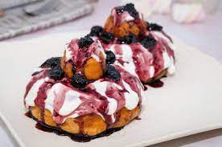

Romanian cheese dougnuts - Papanasi

Duration: 60 minutes
Description
Ingredients (for 6 papanasi)
Papanași is a Romanian and Moldovan traditional fried or boiled pastry, doughnut shaped with a small sphere on top. ...
Papanași are served covered in sour cream and with a sour jam topping. The word papanași may come from the Latin papa or
pappa, which means 'food for children'
- 300 g cow’s sweet cheese (or ricotta/cottage cheese)
- 1 large egg
- 70 g sugar
- 200 g flour
- ½ teaspoon baking powder
- Vanilla extract
- Lemon zest
- 500 ml oil for frying the papanasi
- 200 g fruit preserve
- 200 g sour cream
Steps
- With a fork, mix the cheese, sugar, vanilla extract and lemon zest.
- Separately, mix the flour with the baking powder.
- Gradually add the flour mixture to the cheese mixture. Depending on the
cheese you’re using, you might need to add more or less flour. The dough
should be soft and just a bit sticky, but firm enough to form doughnut balls with your hands.
- Spread some flour on your working surface and knead the dough for a bit to fully combine the ingredients.
- Form 6 large balls and 6 small balls, like in the photo.
- Using your finger, form a hole in each large ball.
- Heat enough oil in a pot to cover the papanasi. Make sure the oil is hot – to do this, drop a bit of dough
in the oil and see if it sizzles.
- Fry two large doughnuts ant two small doughnuts at a time, until they’re golden brown on each side.
- Transfer the doughnuts to a platter covered with absorbent paper to remove the excess oil.
- To make the papanasi, use a large doughnut as the base, top with a spoonful of sour cream, then decorate
with fruit preserve and put the small doughnut on top. You can also sprinkle some powdered sugar on top.